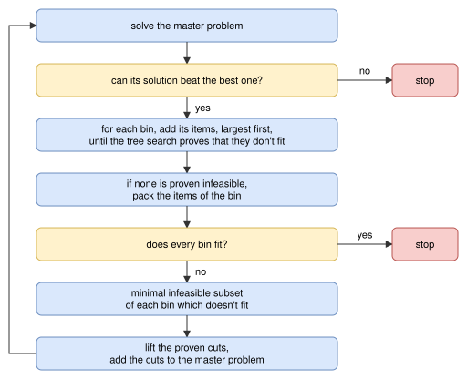

Benders decomposition¶
Objectives¶
This algorithm solves the knapsack objective, with one or several bins, and the bin-packing and variable-sized-bin-packing objectives. It supports the resources of the bins.
It is an exact method when its subproblems use the tree search on relative positions: when it converges, the solution found is optimal, and before that, the value of its master problem is a bound.
Principle¶
It is the combinatorial Benders decomposition of the rectangle Benders decomposition, with the geometry of irregular items. The problem is split in two:
the master problem decides which items go in which bin, ignoring the geometry: it is a one-dimensional problem, where each item is reduced to its area and each bin to its area;
the subproblems check, for each bin of the solution of the master problem, whether its items actually fit together in the bin.
When the items of a bin don’t fit, no-good cuts are added to the master problem, forbidding infeasible subsets of them in a bin of this type, and the master problem is solved again. Since the master problem is a relaxation of the problem, the value of its optimal solution is a bound. The algorithm stops when the items of every bin fit, or when the solution of the master problem can’t be better than the best solution found: the best solution found is then optimal.
Unlike in the rectangle version, nothing is known about the geometry before the first iteration: two irregular items which don’t fit side by side or one above the other may still fit together, interlocked or rotated, so there are no cheap incompatible pairs or triplets, and no dual feasible function cuts. By default, all the geometric information of the master problem comes from the subproblems (see Incompatible pairs and triples below).
Master problem¶
The master problem is a onedimensional instance, with the objective of the instance:
each bin type has its area, rounded up, as length, and keeps its copies, its cost and its resources;
each item type has its area, rounded down, as length, and keeps its copies and, for the
knapsackobjective, its profit.
The roundings keep the master problem a relaxation. It is solved with the MILP assignment algorithm, in non-anytime mode, or in exact mode in the exact mode.
The cuts are encoded as onedimensional resources on the bin types, as in the rectangle version: a cut forbidding \(n_i\) copies of each item type \(i\) of a set \(S\), with lifted item types \(L\), is the resource of capacity \(\sum_{i \in S} n_i - 1\) where the copies of item type \(i \in S\) consume \((1, \ldots, 1, 0)\) (\(n_i\) ones) and the copies of item type \(j \in L\) consume \((1, 0)\). With the variables \(x_{i,t,k,c}\) of the MILP assignment model (bin \(k\) of type \(t\) contains at least \(c\) copies of item type \(i\)), it is the constraint, for each bin \((t, k)\):
Iterations¶
At each iteration, the master problem is solved, then the bins of its solution are checked. With the tree search on relative positions in the subproblems:

The steps are:
Master problem. If all the cuts are proven (see below), the value of its solution is reported as a bound of the instance. If a solution has already been found, and the solution of the master problem can’t be better (smaller profit for the
knapsackobjective, as many bins or more for thebin-packingobjective, cost as large or larger for thevariable-sized-bin-packingobjective), the algorithm stops.Subproblems. The selection of items of each bin of the solution of the master problem is checked (see below). A selection containing the items of a cut added earlier in the same iteration, for another bin, is known to be infeasible and is skipped. The bins whose items fit are assembled into a solution, which is reported if it is better than the best one (for the
knapsackobjective, a subset of the bins is a feasible solution).Convergence. If every bin fits, the solution of the master problem is feasible, and the algorithm stops. Otherwise, no-good cuts are added for the bins which don’t fit, and the master problem is solved again.
Subproblems¶
Without the tree search on relative positions, the items of a bin are packed by solving a single-bin instance with the feasibility objective with the irregular algorithms, in non-anytime mode (a queue of size 128 for the tree search). This finds packings, but it rarely proves that the items don’t fit, so the cuts are mostly unproven.
With the tree search on relative positions:
Infeasible prefix. The items of the bin are sorted by decreasing area, and the tree search on relative positions is called on the largest one, then on the two largest ones, and so on, until it proves that they don’t fit. Proving it for a few large items is often much cheaper than for all the items of the bin, and a small infeasible subset is what the cuts need anyway. If the tree search on relative positions is inconclusive (time limit, continuous rotations), the search stops.
Packing. If no prefix is proven infeasible, the tree search on relative positions is called on all the items of the bin. If its relaxation is feasible, the positions of its solution are checked, and used as a packing if the items don’t overlap. Otherwise, the single-bin
feasibilityinstance is solved, as above.
The answers of the tree search on relative positions are stored, so that the same selection of items is never checked twice, and the data of the tree search on relative positions (the convex pieces of the pairs of item types, the infeasible rotation combinations) are shared by all its calls.
No-good cuts¶
Minimal infeasible subsets. The infeasible items of a bin (the infeasible prefix, or all the items of the bin) are reduced to a minimal infeasible subset with the depth-first search of the rectangle version: the items are sorted by increasing area, and removed one at a time, as long as the remaining items don’t fit. Each check is a subproblem, which is expensive for irregular items, so the search stops after a single subset per bin by default. The subset gives a no-good cut: no bin of this type contains at least these copies of these item types.
Lifting. A proven cut forbidding a set \(S\) of items is lifted by giving a coefficient 1 to other item types: the cut then forbids any \(|S|\) items among \(S\) and the lifted item types. The item types not in the cut are visited by decreasing area. An item type \(j\) is lifted if every selection made of one copy of \(j\) and of \(|S| - 1\) items among \(S\) and the item types already lifted (\(L\)) is proven infeasible, either because it contains the items of a proven cut, or by the tree search on relative positions. Then no feasible selection reaches \(|S|\) on the lifted cut, so it stays valid. Unlike in the rectangle version, the coefficients are only 0 or 1: there is no cheap bound, like the bar relaxation, on the number of items of the cut which fit together with \(j\). At most 4 item types are lifted in a cut.
Lifting makes each cut much stronger, but it is expensive: on jakobs2_sb, it adds about 3 item types per cut, but it takes 60% of the time.
Proofs. A cut is proven if every check of its derivation proved that the items don’t fit, which in practice requires the tree search on relative positions. A cut which isn’t proven is still added, so that the algorithm keeps converging, but then the master problem may not be a relaxation anymore: while a cut is unproven, the value of the master problem is not reported as a bound of the instance, and the solution found is not proven optimal.
Incompatible pairs and triples (optional, off by default). With the tree search on relative positions, before the first iteration, the pairs of items which don’t fit together in a bin, and then the triples whose pairs fit and whose total area doesn’t exceed the area of the bin, can be proven incompatible, each one giving a proven cut. This pays off with few item types: on shapes0_sb (4 item types), the optimality is proven in 1.4 seconds instead of about 3.5. But the number of checks grows quickly with the number of item types, and most of the incompatibilities are found anyway through the subproblems: with 25 item types, on jakobs1_sb, the pairs alone take 25 seconds, and the proof of optimality goes from about 23 to 37 seconds. They didn’t improve the bound of any of the instances that aren’t solved.
Search parameters¶
In anytime mode, the algorithm runs until it converges or reaches the time limit. In the non-anytime modes, it also stops after 32 iterations. In the exact mode, it runs as in anytime mode, its master problem is solved in exact mode, and its subproblems always use the tree search on relative positions, so that its bound is proven.
Automatic selection¶
In the exact mode, it is run for the knapsack objective with a single bin, alongside the other algorithms. The column generation algorithm uses it, with the tree search on relative positions, to solve its pricing problems when it needs to prove a bound.
It can be selected with --use-benders-decomposition 1 (CLI) or use_benders_decomposition (Python), and its subproblems use the tree search on relative positions with --benders-decomposition-use-tree-search-relative-positions 1. It only finds a solution once every bin of the solution of its master problem is packed, which may take long, while its bound may be good much earlier: it is best run together with other algorithms (e.g. --use-tree-search 1), whose solutions may then be proven optimal by this bound.
Strengths and limitations¶
The algorithm proves the optimality of the instances in which few items fit in a bin, or with few item types, whose minimal infeasible subsets are small and shared by many selections. In the exact mode, together with the tree search, which finds the solutions, on the bin-packing instances of data/irregular/martinez2017, it proves the optimality of albano_sb, dighe1_sb, dighe2_sb, fu_sb, han_sb, jakobs1_sb, jakobs2_sb, mao_sb, poly1a_sb, shapes0_sb, shapes1_sb and shapes2_sb, in a few seconds to a few minutes. On poly1a_sb and jakobs2_sb, this requires the tree search on relative positions in the subproblems: with the MILP instead, the bounds stay at 3 and 6 bins, whereas the optimal solutions have 4 and 7 bins.
When more items fit in a bin, the minimal infeasible subsets have 5 items or more, and each proof takes seconds: on poly2a_sb (15 item types), the bound stays at the area bound, 5 bins, whereas the best solution found has 6 bins.
Source files¶
src/irregular/benders_decomposition.hpp,src/irregular/benders_decomposition.cpp: the decompositionsrc/irregular/tree_search_relative_positions.hpp,src/irregular/tree_search_relative_positions.cpp: the tree search on relative positions of the subproblemsscripts/doc_figures/irregular_benders_decomposition.py: the figures of this page
References:
“Combinatorial Benders Decomposition for the Two-Dimensional Bin Packing Problem” (Côté, Haouari and Iori, 2021)
“Facets of the knapsack polytope” (Balas, 1975)